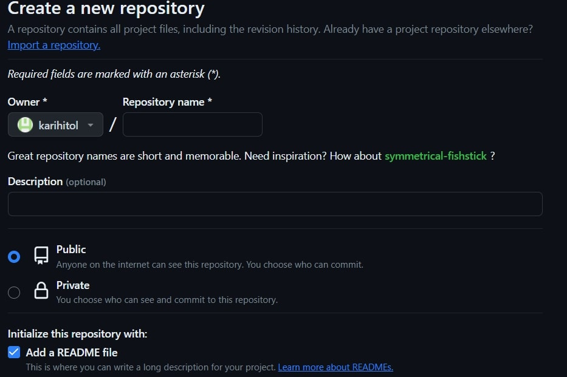
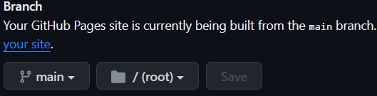
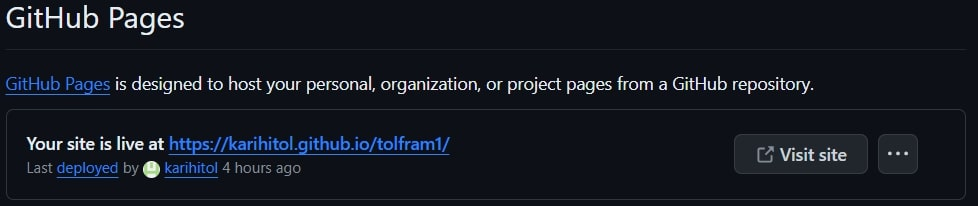

Project 1
The point of this project is to familiarize myself with web development. I can then use this website as a portfolio for all the projects worked on for VEL608G. In short, this entire project is the website and how I made it.
The first step was downloading brackets, the code editor I used to create this website. Having no knowledge in html I followed the teacher's recommendation. I went on to download a template from html5up. The template I chose is called Forty. I was mainly attracted to the color, and the simplicity, it seemed to fit my needs. I copied the template into brackets and tried out the live preview to see what it looked like. After that I immediately started to make the changes for my personnal portfolio. I had to delete a few elements from the template such as a "Log in" button, being very careful because I wasn't sure of what each line of code does. More than once did everything on the front page disappear in the Menu bar on the right as I was trying to remove it. The template came with a very helpful page called elements to show me how to make titles, links, etc.
After writing about myself, I started this very page, writing about what I had done. What's left to do at this point is sign up to Github and see how I can uplaod this site. I created an account and went on to create a new public repository, and checked add a README file.
I installed git on my computer and was going to use git bash to upload the files on the repository but ended up just dragging all the files needed for the website to the repository. Then I clicked on "Commit changes". The files were uploaded. Next step is to go in the settings of the repository, go to Pages, select main as the source, save and after refreshing the link is at the top of the page.
 My aspirations regarding this class is to get better at html and web development, and understand better how 3d printing works and where it's headed in the future. Being in engineering it's very likely that it will play a part in my work and I see this class as the best opportunity to learn about it. I can also refresh my memory on 3d drawing which I learned during my first year. Regarding the final project I haven't made a decision on what I will do, but I'm thinking of something in the lines of an automated pet feeder, or plant watering system.